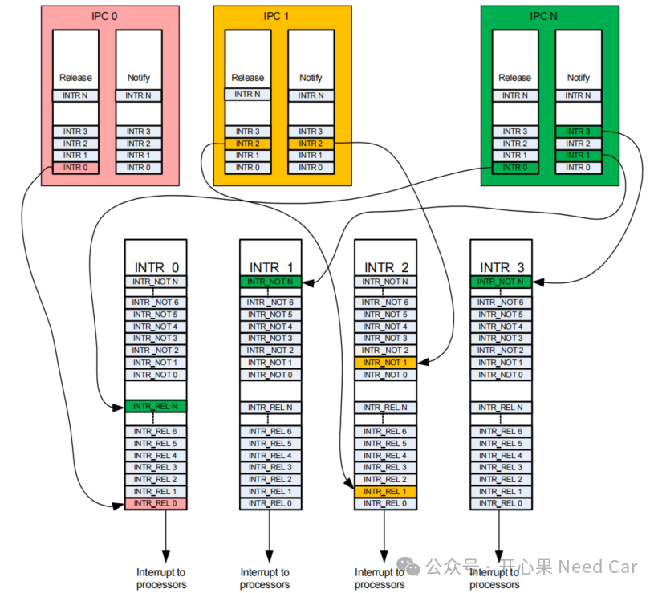
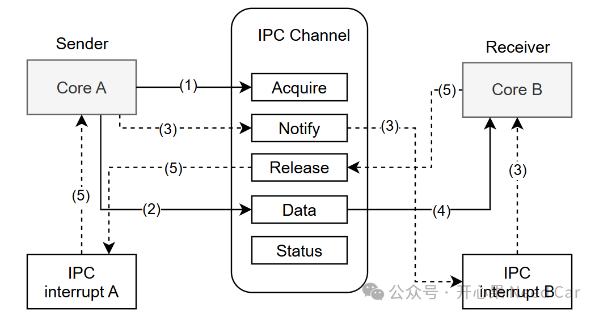
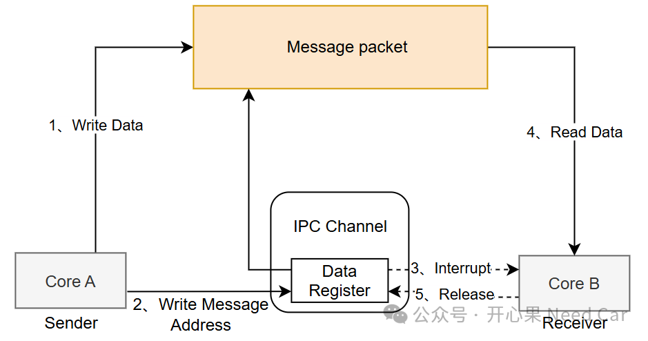

开心果 Need Car · 2024-12-06T06:35:00+08:00 · 微信原文

每个Processor都有一个中断向量表用于存储中断例程地址，每个IPC Channel可以主动触发和响应中断。
2、IPC的核间通信流程
以CYT4BB芯片为例，具体细化一下核间通信流程，示意如下：

（1）发送Message的Core A尝试获取一个IPC Channel，当Core A获取一个可用的IPC Channel以后，即可通过该IPC Channel发送目标数据，没有释放此IPC Channel前，该通道不能被抢占；
（2）获取可用的IPC Channel后，Core A可以向IPC Channel的数据寄存器（IPC_STRUCTx_DATA0、IPC_STRUCTx_DATA1）填充数据；
（3）当Message（数据信息）写入IPC Channel后，发送方（Core A）会触发一个中断通知事件，告知接收方（Core B）去获取数据。它通过在IPC通道的IPC_STRUCTx_NOTIFY寄存器中设置相应的位来实现这一点。该事件在IPC中断B处创建一个通知事件。如果IPC通道的通知事件通过在IPC中断B中设置掩码位被启用，那么这将会在接收方产生一个中断；

该方式的核心就是：发送方将待发送的数据，按照一定的格式（struct）写到一个指定地址，之后将该地址（eg：4 byte）写入数据寄存器（Data Register），接收方从数据寄存器获取交互数据的地址，之后从该地址处，以同样的格式读取所需信息。如此，即可完成核间的大数据交互。
往期精彩回顾